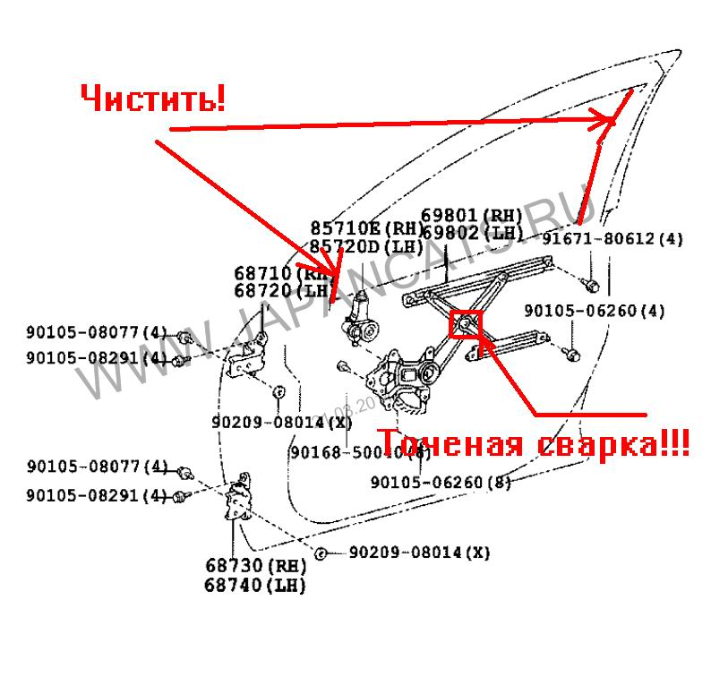

Вопрос:
Народ проблемма вот в чем стеклоподъемник вод двери , иногда глючит стекло орткрывается ,а когда приходит время его закрыть он немного трогается и за тем как будто срабатывает блокировка и с него снимается напряжение (беру вырубаю машину ставлю на сигналку потом снимаю с нее ,завожу двиг и вуаля стек подемник начинает работать ) так происходит не всегда , а время от времени
Ответ:
2 раза встретился с похожей проблемой в течении года.
Разбирал обшивку, снимал механизм стеклоподъемника.
Там точечная свалка(3 точки,она и отваливается).
Первый раз пожалел механизм-чуточку сваркой прихватил и все. Отломалось через некоторое время.
Второй раз намертво заварил!!!
Вариться обыкновенной сваркой-главное не прожечь!
И почистить направляющие!
Вот где надо варить и чистить:
